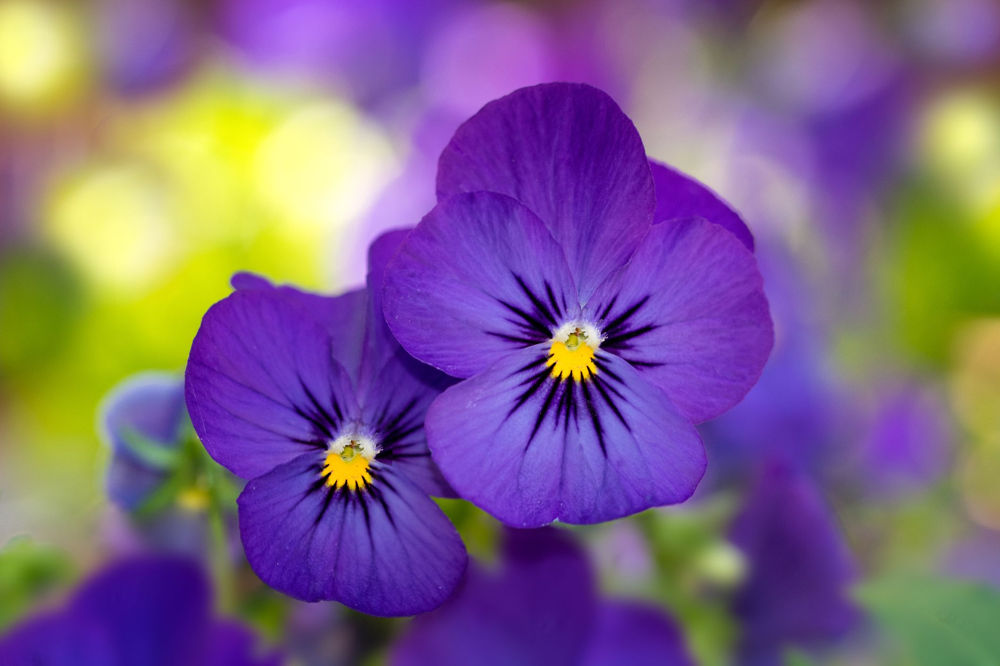
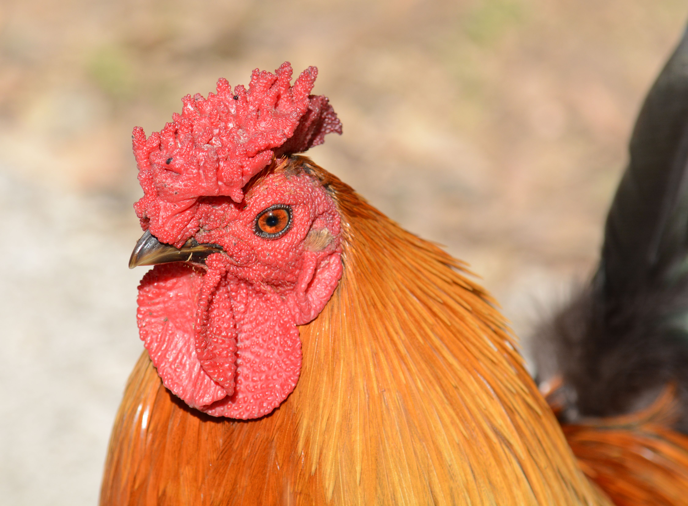
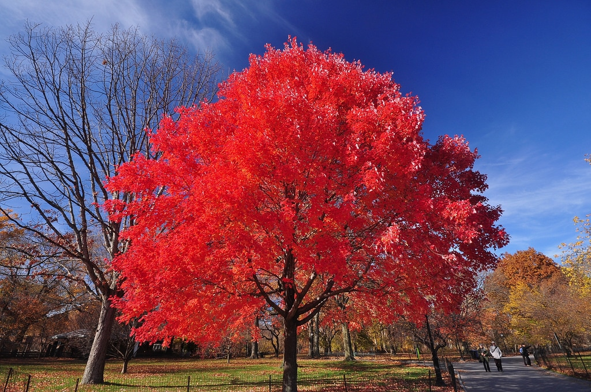

Rhode Island, measuring only about 48 miles long and 37 miles wide, is the smallest of the U.S. states. Despite its small area, Rhode Island, known as the “Ocean State,” boasts over 400 miles of coastline. Rhode Island was founded by Roger Williams in 1636, who had been banished from the Massachusetts colony for his advocacy of religious tolerance and the separation of church and state. During the colonial period, Newport was a major hub for shipping and trade, and in the 19th century, Rhode Island was at the forefront of the Industrial Revolution and the establishment of power-driven textile mills. Rhode Island hosted the first National Lawn Tennis Championship in 1899, and is home to the Tennis Hall of Fame. Famous Rhode Islanders include novelists Cormac MacCarthy and Jhumpa Lahiri, actor James Woods, television personality Meredith Vieira and Civil War U.S. Army officer Ambrose Burnside.
| Date of Statehood | Capital | Population | Size |
|---|---|---|---|
| May 29, 1790 | Providence | 1.1 million | 1,545 square miles |
Hope
Violet
Rhode Island Red
Red Maple
Interesting facts